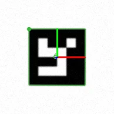
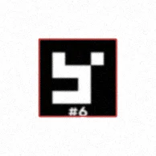

Where to put a label, and a corner mark
Keep it short, in the black border row at the Studio's own size, or put it outside the white quiet zone. Never in the quiet zone itself, and not near a ChArUco corner. Every verdict below is the Studio's own output on a test board you can open.
The short answer
- Safethe black border row, on any side, at the Studio's own size (half a cell) with a short id like #12. (B1, B2, B3 and B4)
- Safeoutside the quiet zone, on any side, with a Gap of 0 or more. (D1, D2, D5, D6 and D7)
- Safea ChArUco label in its black square; a grid's in its border row. (E1 and E2)
- Safethe black triangle corner mark, and ChArUco's cut corner. (F1, F2 and F3)
- Not safeletters taller than half a cell, or a text longer than the border row. (B5, B6 and B8)
- Not safeany ink in the quiet zone, the white ring round the marker. (C1, C2, C3, C4, D3, D4 and E3)
- Not safea ChArUco label near a chessboard corner. (E4)
Each line is checked against the run when this page is built: the build stops if a marker it names gets another verdict.
The board
28 markers, inkjet stickers on the Letter vinyl preset. Each varies one thing from the bare marker A1: where the label goes, how big it is, or the corner mark. The singles are DICT_4X4_50 markers, 22 mm on a 30 mm square; the ChArUco boards use DICT_4X4_100, so no two markers on the board print the same id. In the Studio each is an ArUco Extrude, numbered in this order.
Every marker, and what the Studio says
Each marker gets two verdicts. The Studio's rules are the warnings it shows in the ArUco Extrude panel; they come from earlier, much larger studies (below). Verify is the Studio's simulated camera and OpenCV's own detector, reading the marker 320 times with its label and 320 times without, here with OpenCV 5.0, the newest. The Studio's Verify runs this same OpenCV in your browser by default (its OpenCV choice also offers 4.11). Other versions of OpenCV can read these markers differently near the limits: on this board OpenCV 4.11 and 5.0 disagreed on 6 of the 28 (B5, B7, B8, C4, D4, E4; the run with both, which kept the worse). The verdict is the worse of the two.
The bare marker
No label and no corner mark: what every other marker is measured against.
A1No label, no corner mark#0 · ArUco Extrude 1
WhereNo label.
The Studio's rulesNo rule broken. Safe
Verify · OpenCV 5.0Reads in 204 of the 320 views: the baseline (the views run from easy to past reading). The dialog's angle sweep: to 80°. Safe
On the marker: the black border row
Where a label goes when you turn it on: white letters knocked out of the marker's outer row of black cells, half a cell tall (Label › Place: On marker, Surface: Black).
B1Below#1 · ArUco Extrude 2
WhereOn marker, Surface Black, side Below · letters 1.83 mm tall (0.5 cell).
The Studio's rulesNo rule broken. Safe
Verify · OpenCV 5.0Lost 1 of the bare marker's 243 reads (0.4 %). The dialog's angle sweep: to 80°. Safe
B2Above#2 · ArUco Extrude 3
WhereOn marker, Surface Black, side Above · letters 1.83 mm tall (0.5 cell).
The Studio's rulesNo rule broken. Safe
Verify · OpenCV 5.0Lost none of the bare marker's 255 reads, gained 1. The dialog's angle sweep: to 80°. Safe
B3Left#3 · ArUco Extrude 4
WhereOn marker, Surface Black, side Left · letters 1.83 mm tall (0.5 cell).
The Studio's rulesNo rule broken. Safe
Verify · OpenCV 5.0Lost none of the bare marker's 254 reads. The dialog's angle sweep: to 80°. Safe
B4Right#4 · ArUco Extrude 5
WhereOn marker, Surface Black, side Right · letters 1.83 mm tall (0.5 cell).
The Studio's rulesNo rule broken. Safe
Verify · OpenCV 5.0Lost none of the bare marker's 235 reads, gained 3. The dialog's angle sweep: to 75°. Safe
B5Letters ¾ cell tall#5 · ArUco Extrude 6
WhereOn marker, Surface Black, side Below · letters 2.75 mm tall (0.75 cell).
The Studio's rules2.75 mm letters are over the 1.83 mm the border row holds (a border row keeps a quarter module of black above and below its text, or the detector may miss it); the label's 1 line stand 2.75 mm, the border row holds 1.83 mm: the text runs out of it. Not safe
Verify · OpenCV 5.0Lost 2 of the bare marker's 246 reads (0.8 %). The dialog's angle sweep: to 80°. Safe
B6Letters a whole cell tall#6 · ArUco Extrude 7
WhereOn marker, Surface Black, side Below · letters 3.67 mm tall (1 cell).
The Studio's rules3.67 mm letters are over the 1.83 mm the border row holds (a border row keeps a quarter module of black above and below its text, or the detector may miss it); the label's 1 line stand 3.67 mm, the border row holds 1.83 mm: the text runs out of it. Not safe
Verify · OpenCV 5.0Lost 11 of the bare marker's 235 reads (4.7 %); 10 of them in sharp, well-resolved views. The dialog's angle sweep: to 75°. Not safe
A view it lost with OpenCV 5.0: 16 px per cell, blur 1 px, tilt 0°. Green: read; red: printed, not read.


Where it lost them: red cells, by px per cell (rows) and blur (columns), 8 views each.
B7Longer text: “#{ids} {dict}”#7 · ArUco Extrude 8
WhereOn marker, Surface Black, side Below · letters 1.83 mm tall (0.5 cell).
The Studio's rulesNo rule broken. Safe
Verify · OpenCV 5.0Lost 9 of the bare marker's 258 reads, gained 5 (1.6 %). The dialog's angle sweep: to 80°. Safe
B8Text longer than the row: “#{ids} {dict} {type}”#8 · ArUco Extrude 9
WhereOn marker, Surface Black, side Below · letters 1.83 mm tall (0.5 cell).
The Studio's rulesthe label is 7.3 mm longer than the border row holds. Not safe
Verify · OpenCV 5.0Lost 4 of the bare marker's 234 reads (1.7 %). Where the bare pose is sharp (13 views) the pose came out worse in 13 and better in 0: 0.549 mm mean error against 0.194 mm bare. The dialog's angle sweep: to 75°. Not safe
B9Moved up one cell, onto the data cells#9 · ArUco Extrude 10
WhereOn marker, Surface Black, side Below · letters 1.83 mm tall (0.5 cell) · moved 0, 3.67 mm.
The Studio's rulesNo rule broken. Safe
Verify · OpenCV 5.0Lost none of the bare marker's 234 reads. The dialog's angle sweep: to 80°. Safe
On the marker: the quiet zone
Black letters in the white ring round the marker (Surface: White).
C1Below#10 · ArUco Extrude 11
WhereOn marker, Surface White, side Below · letters 1.83 mm tall (0.5 cell) · 0.25 cell from the black.
The Studio's rulesblack text in the quiet zone: any ink in the white ring round the black costs the detector (core.label's study: about 11 points of reads for a grey id, up to 40 once the dots spread). Not safe
Verify · OpenCV 5.0Lost 2 of the bare marker's 259 reads, gained 2. The dialog's angle sweep: to 80°. Safe
C2Above#11 · ArUco Extrude 12
WhereOn marker, Surface White, side Above · letters 1.83 mm tall (0.5 cell) · 0.25 cell from the black.
The Studio's rulesblack text in the quiet zone: any ink in the white ring round the black costs the detector (core.label's study: about 11 points of reads for a grey id, up to 40 once the dots spread). Not safe
Verify · OpenCV 5.0Lost none of the bare marker's 235 reads, gained 2. The dialog's angle sweep: to 80°. Safe
C3Left#12 · ArUco Extrude 13
WhereOn marker, Surface White, side Left · letters 1.83 mm tall (0.5 cell) · 0.25 cell from the black.
The Studio's rulesblack text in the quiet zone: any ink in the white ring round the black costs the detector (core.label's study: about 11 points of reads for a grey id, up to 40 once the dots spread). Not safe
Verify · OpenCV 5.0Lost none of the bare marker's 218 reads. The dialog's angle sweep: to 80°. Safe
C4Right#13 · ArUco Extrude 14
WhereOn marker, Surface White, side Right · letters 1.83 mm tall (0.5 cell) · 0.25 cell from the black.
The Studio's rulesblack text in the quiet zone: any ink in the white ring round the black costs the detector (core.label's study: about 11 points of reads for a grey id, up to 40 once the dots spread). Not safe
Verify · OpenCV 5.0Lost 1 of the bare marker's 253 reads, gained 1. The dialog's angle sweep: to 80°. Safe
Outside the marker
The label in its own band of the rectangle (Place: Outside), Gap away from the quiet zone; a negative Gap pushes the band over it.
D1Below, Gap 2 mm (the default)#14 · ArUco Extrude 15
WhereOutside, side Below · Gap 2 mm · letters 3.67 mm tall (1 cell) · 1.55 cell from the black.
The Studio's rulesNo rule broken. Safe
Verify · OpenCV 5.0Lost none of the bare marker's 216 reads. The dialog's angle sweep: to 80°. Safe
D2Below, Gap 0: touching the quiet zone#15 · ArUco Extrude 16
WhereOutside, side Below · Gap 0 mm · letters 3.67 mm tall (1 cell) · 1 cell from the black.
The Studio's rulesNo rule broken. Safe
Verify · OpenCV 5.0Lost 2 of the bare marker's 243 reads, gained 1 (0.4 %). The dialog's angle sweep: to 80°. Safe
D3Below, Gap −½ cell: half way into the quiet zone#16 · ArUco Extrude 17
WhereOutside, side Below · Gap −1.83 mm · letters 3.67 mm tall (1 cell) · 0.5 cell from the black.
The Studio's rulesa gap of -1.83333 mm: the label's band overlaps the marker's box by 1.83333 mm. Not safe
Verify · OpenCV 5.0Lost none of the bare marker's 253 reads, gained 1. The dialog's angle sweep: to 80°. Safe
D4Below, Gap −1 cell: touching the black#17 · ArUco Extrude 18
WhereOutside, side Below · Gap −3.67 mm · letters 3.67 mm tall (1 cell) · touching the black.
The Studio's rulesa gap of -3.66667 mm: the label's band overlaps the marker's box by 3.66667 mm. Not safe
Verify · OpenCV 5.0Lost none of the bare marker's 247 reads, gained 5. The dialog's angle sweep: to 80°. Safe
D5Above, Gap 2 mm#18 · ArUco Extrude 19
WhereOutside, side Above · Gap 2 mm · letters 3.67 mm tall (1 cell) · 1.85 cell from the black.
The Studio's rulesNo rule broken. Safe
Verify · OpenCV 5.0Lost none of the bare marker's 252 reads, gained 1. The dialog's angle sweep: to 80°. Safe
D6Left, Gap 2 mm#19 · ArUco Extrude 20
WhereOutside, side Left · Gap 2 mm · letters 3.67 mm tall (1 cell) · 1.55 cell from the black.
The Studio's rulesNo rule broken. Safe
Verify · OpenCV 5.0Lost none of the bare marker's 235 reads. The dialog's angle sweep: to 75°. Safe
D7Right, Gap 2 mm#20 · ArUco Extrude 21
WhereOutside, side Right · Gap 2 mm · letters 3.67 mm tall (1 cell) · 1.55 cell from the black.
The Studio's rulesNo rule broken. Safe
Verify · OpenCV 5.0Lost none of the bare marker's 238 reads. The dialog's angle sweep: to 80°. Safe
Grids and ChArUco boards
A grid's label goes in the border row of its edge marker nearest the middle; a ChArUco board's in a black square of its edge row.
E1Grid 2 × 2: in its border row#21–24 · ArUco Extrude 22
WhereOn marker, Surface Black, side Below · letters 1.96 mm tall (0.5 cell).
The Studio's rulesNo rule broken. Safe
Verify · OpenCV 5.0Lost none of the bare marker's 1029 reads, gained 1. The dialog's angle sweep: to 75°. Safe
E2ChArUco 5 × 4: in a black square#50–59 · ArUco Extrude 23
WhereOn marker, Surface Black, side Below · letters 1.5 mm tall (1 cell).
The Studio's rulesNo rule broken. Safe
Verify · OpenCV 5.0Lost none of the bare marker's 2387 reads. The dialog's angle sweep: to 75°. Safe
E3ChArUco 5 × 4: in a white square's margin#60–69 · ArUco Extrude 24
WhereOn marker, Surface White, side Below · letters 0.75 mm tall (0.5 cell).
The Studio's rulesblack text in the quiet zone: any ink in the white ring round the black costs the detector (core.label's study: about 11 points of reads for a grey id, up to 40 once the dots spread). Not safe
Verify · OpenCV 5.0Lost none of the bare marker's 2417 reads, gained 5. The dialog's angle sweep: to 75°. Safe
E4ChArUco 5 × 4: moved toward a chessboard corner#70–79 · ArUco Extrude 25
WhereOn marker, Surface Black, side Below · letters 1.5 mm tall (1 cell) · moved 3.5, 3.5 mm.
The Studio's rulesthe label comes within 1.75 mm of a chessboard corner (the detector refines them: keep 0.3 square, 3.60 mm, clear). Not safe
Verify · OpenCV 5.0Lost 1 of the bare marker's 2445 reads, gained 1. Where the bare pose is sharp (178 views) the pose came out worse in 86 and better in 32: 0.081 mm mean error against 0.048 mm bare. The dialog's angle sweep: to 75°. Marginal
Corner marks
Corner mark › Black triangle (labels off). On a ChArUco board, whose top-left square is black, the Studio cuts that square's outer corner instead.
F1Single: black triangle#25 · ArUco Extrude 26
WhereNo label.
The Studio's rulesNo rule broken. Safe
Verify · OpenCV 5.0Lost 2 of the bare marker's 254 reads, gained 3. The dialog's angle sweep: to 75°. Safe
F2Grid 2 × 2: black triangle#26–29 · ArUco Extrude 27
WhereNo label.
The Studio's rulesNo rule broken. Safe
Verify · OpenCV 5.0Lost 2 of the bare marker's 945 reads, gained 3. The dialog's angle sweep: to 75°. Safe
F3ChArUco 5 × 4: the black square's corner cut#80–89 · ArUco Extrude 28
WhereNo label.
The Studio's rulesNo rule broken. Safe
Verify · OpenCV 5.0Lost none of the bare marker's 2454 reads. The dialog's angle sweep: to 75°. Safe
How Verify measured it
The same marker, read twice through the same 320 views: as planned, and bare, with its label and corner mark taken away. Both views share the camera, the crop, the blur and the grain, pixel for pixel, so a read the bare marker gets and the labelled one does not is the label's doing. A read is one marker id in one view, so a grid or a ChArUco board counts each of its markers. The views cover 3 to 16 px per cell on the sensor (from the edge of reading to Verify's bench), 0.5 to 2.5 px of blur, head on and tilted 45°, grain 0.1, 4 seeds each.
- Safe: it loses under 1 % of the bare marker's reads, or a sign test cannot tell the loss from chance (p ≥ 0.05).
- Marginal: a real loss under 5 %, or, where the bare pose is sharp, a mean pose error 20 % or more worse.
- Not safe: a loss of 5 % or more; or 2 % or more of the reads in the easy views (8 px per cell or more, 1 px of blur or less, where a bare marker never fails), 2 at least; or the pose 100 % worse.
Why not just Verify's dialog? It shows one view at a time, a clean angle sweep and a head-on read limit. Its sweep shows nothing: 11 of the 11 markers this page calls not safe or marginal sweep exactly like their bare marker (B5, B6, B8, C1, C2, C3, C4, D3, D4, E3 and E4). The dialog catches the worst places; the paired check measures the rest. It is aruco_studio/web_marks.py, version 1.
What Verify cannot judge yet
Verify found a cost for 3 of these markers (B6, B8 and E4); the rules flag 11. Where only the rules flag a marker (B5, C1, C2, C3, C4, D3, D4 and E3), Verify saw no cost. Two things the studies behind those rules measured, Verify does not draw, and one more it leaves out:
- Ink spread. A printer's dots grow into the white round them, so ink in the quiet zone creeps toward the marker's black; the studies measured up to −40 points once it did. Verify draws ink at its exact size.
- Grey ink. The studies' −11 points in the quiet ring were grey ids; Verify draws the label black, in OpenCV's thin Hershey font stretched to the print's Helvetica widths.
- What is round the sticker. Verify draws white past the sticker's edge. On a dark part the quiet zone is all the white there is, and black letters in it can join the black border to the dark background.
So treat Verify's “no loss” in the quiet zone as no evidence it is safe on paper; the rule stays. The test Verify cannot do is yours: Print the board, stick it where your markers will go, and read it with your camera.
Where the rules come from
The rules came out of the studies behind the ArUco Extrude add-in, in October 2026: 430,260 simulated photos for the label, 298,000 for the corner mark, on OpenCV's detector. Their numbers are kept in the core, next to the rules they set: core/label.py and core/chamfer.py.
- White letters knocked out of the black border row cost nothing (−0.3 points, not significant) while they are at most half a cell tall, keep a quarter cell of black above and below, and stay out of the corner cells.
- Any ink in the 1-cell quiet ring costs: −11 points for a grey id, up to −40 once a printer's dots spread.
- Black text on the white: 0.5 cell from the black cost −7.3 points, 0.7 cell −1.5 points, a whole cell or more: nothing (3,000 paired trials). That is the quiet ring's own edge, so the quiet ring is the rule.
- A ChArUco board's label fits in a black square for free; a bright mark nearer than 0.3 of a square to an inner chessboard corner pulls that corner.
- Corner marks: a black triangle in the quiet zone's corner, the white tile's corner cut, and a ChArUco board's top-left black square's outer corner cut cost nothing. Cutting the marker's own black corner is never done: corner 0 slides along the cut.
Check it yourself
- Open the board in the Studio.
- Click a marker, then Verify (K). Drag Tilt and Blur; pick another marker from the list.
- Click a marker to open its ArUco Extrude panel: the Label tab shows the rule warnings this page quotes.
- Print it from the Studio (Print, at 100 %), stick it where your markers will go, and read it with your camera.
Built 2026-10-21 from core 0.1.0 (commit e34648f-dirty), with OpenCV 5.0.0 (Python 3.11.15, numpy 2.3.5, 400 s). The raw run: verify.json.